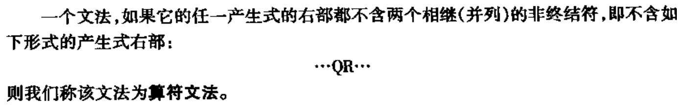

算符优先文法
【预备】算符文法的定义：
1.无二义；
2.文法中不存在形式的产生式；
即，不存在有相邻的非终结符的产生式。
书上的定义
算符优先文法的定义：
在算符文法的定义上：
1.无二义；
2.文法中不存在形式的产生式；
即，不存在有相邻的非终结符的产生式。
书上的定义
再加一条：
3.文法中不存在空串，且定义了确定的优先级;
优先表的构造
人眼构造
设G是算符文法，对任何一对终结符a、b，有：
- a=b，当且仅当文法G中含有形如P→…ab…或P→…aQb…的产生式；
- a＜b，当且仅当G中含有形如P→…aR…的产生式，而R→b或R→Qb；
- a＞b，当且仅当G中含有形如P→…Rb…的产生式，而R→a或R→aQ
举个栗子
考虑这样一个非二义文法，有分析表
从文法构造优先关系表算法
预备
构造
有了FIRSTVT(P)和LASTVT(P)之后，就可以通过检查每个产生式的候选式，来确定终结符之间的＜和＞关系，即：构造出分析表
这个算法是这样的：
举个栗子
比如对于文法
算符优先分析的内部机理
【预备】短语、素短语、最左素短语
规约过程
- 非终结符：移进
- 终结符：根据算符优先表，比较栈顶元素x（非终结符透明）和即将入栈的y
- 若x<y或x=y：移进
- 若x>y:规约（弹出再塞入）
- 接受：#=#
与的区别
形式化算法
优先函数
在实际实现算符优先分析算法时，我们一般不用前面构造的的那种<>=的优先表，而是使用优先表对应的优先函数来进行判断。
定义
我们把每个终结符θ与两个函数相对应
其中f被称为入栈优先函数，g被称为比较优先函数。
构造方法
举个栗子
如果去掉i和#两个符号，可以有对应的方向图
证明
# TODO 小测来不及了故略
5.2.4 算符优先分析中的出错处理
见P96 课上并没有讲过